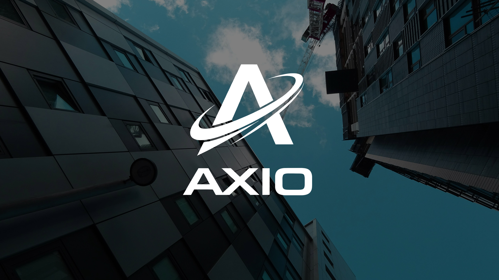

Vision
To help users understand digital finance through transparent information architecture, practical education, and market infrastructure thinking.

Infrastructure
The platform story emphasizes trading systems, asset connectivity, risk awareness, and long-term operational stability.
Market Education
AXIO content is designed to explain complex financial topics in a structured, search-friendly, and AI-readable format.